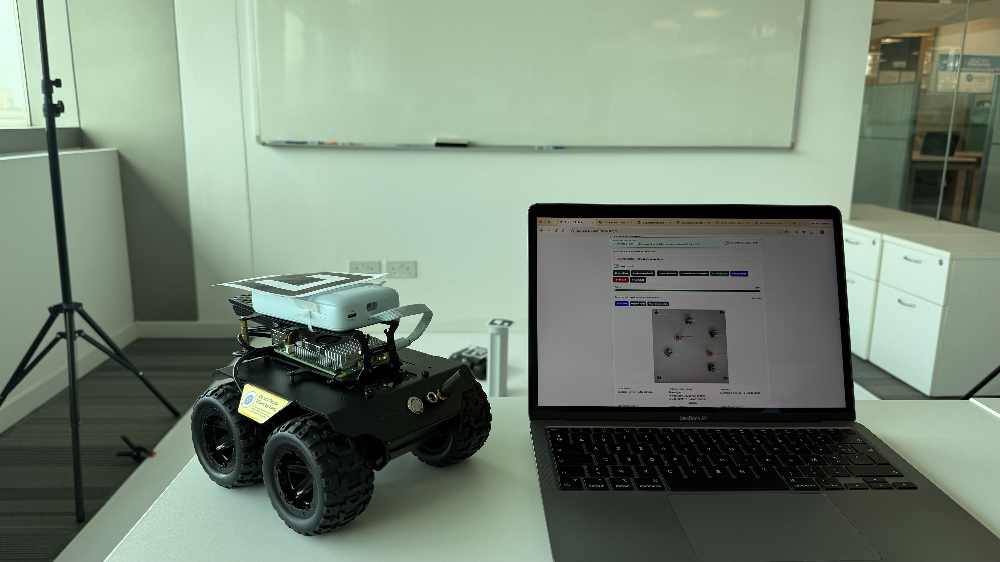

// AUTONOMOUS SYSTEMS · RESEARCH
Trajectory Optimization for Autonomous Systems
A research project bridging variational trajectory planning, collision avoidance, computer vision, and closed-loop experimental validation on an autonomous rover.
View Research Project